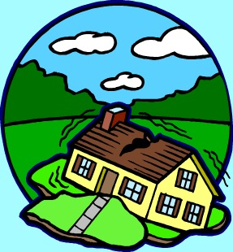

 Earthquake Survey Data from UCLA
Data Sets Questionnaires Other Links Disaster Relief Movies Bibliography
On-line analysis
Earthquake related behavior is an important part of disaster research in California. Behavior during and immediately after earthquakes is influenced by a range of socioeconomic, situational, and social psychological factors. Here you will find survey data collected as part of research at the University of California, Los Angeles about the knowledge, attitudes and behaviors of individuals in responding to earthquakes. In some cases, only the survey instrument is available. As data files for these instruments become publicly available, they will be added to this site. Please read the Disclaimer before downloading any materials.
Data Sets and Questionnaires
Data Sets Click on a file type and/or codebook to begin downloading. Or, where available, click on "on-line analysis" to use the data now.Bourque, Linda B. Bay Area (Loma Prieta) Earthquake Study, 1990
SPSS .POR file SPSS .SAV file Codebook On-line analysis QuestionnaireBourque, Linda B. Community Response to the January 17, 1994 Northridge Earthquake README file
SPSS .SAV file SPSS .POR file ASCII file SAS data def SPSS data def STATA data def Codebook On-line analysis Questionnaire specifications QuestionnaireBourque, Linda B. Community Response to the January 17, 1994 Northridge Earthquake: El Nino Subset
README file SPSS.SAV file Documentation Open-ended text1 Open-ended text2Turner, Ralph H. Earthquake Watch in California, 1977-1979 --Wave I Reinterview of Baseline Sample, July 1977
SPSS .POR file SPSS .SAV file Codebook Questionnaire On-line analysis
Turner, Ralph H. Earthquake Watch in California, 1977-1979 --Wave IV, May 1979
SPSS .POR file SPSS .SAV file Codebook Questionnaire On-line analysis
Turner, Ralph H. Earthquake Watch in California, 1977-1979 --Small Quake Interview, January 1, 1979
SPSS .POR file SPSS .SAV file Codebook Questionnaire On-line analysis
Turner, Ralph H. Earthquake Watch in California, 1977-1979 --Baselline Interview, January 1977
SPSS .POR file SPSS .SAV file Codebook Questionnaire On-line analysis
Institute for Social Science Research, University of California, Los Angeles. Los Angeles Metropolitan Area Studies, No. 3 -- Earthquake Project
Raw data file QuestionnaireBourque, Linda B. Whittier Narrows Earthquake, 1988
SPSS .POR file SPSS .SAV file Codebook On-line analysis QuestionnaireReturn to top
Questionnaires Click on a title to begin downloading a questionnaire. Questionnaires are in PDF format.
Knowledge, Attitudes and Preparedness for Earthquakes: Turner Community Sample, 1977 (questionnaire only)
Post-Sylmar Earthquake Study: San Fernando Valley Sub-sample, 1972 (questionnaire only)
Post-Sylmar Earthquake Study: San Fernando Valley Sub-sample -- Child Interviews, 1972 -- Interview A (questionnaire only)
Post-Sylmar Earthquake Study: San Fernando Valley Sub-sample -- Child Interviews, 1972 -- Interview B (questionnaire only)
Post-Sylmar Earthquake Study: Wave II Reinterview (questionnaire only)
Southern California Earthquake preparedness Project (SCEPP), 1985 (questionnaire only)
Return to top
California Institute of Technology Seismic Laboratory
Incorporated Research Institutions for Seismology (IRIS)
National Earthquake Information Center , World Data Center for Seismology, Denver
National Hazards Data Resources Directory
National Information Service for Earthquake Engineering
Searches abstracts of earthquake engineering articles and research
National Seismic Hazard Maps
National maps of earthquake shaking hazards provide information essential to building codes used in the United States
NOAA National Geophysical Data Center
Northern California Earthquake Data CenterNorthridge Earthquake Research
Southern California Earthquake Center at UCLA
Southern California Earthquake Data Center
U.S. National Strong-Motion Program
Return to top
Earthquake Preparedness and Disaster Relief
National Disaster Medical System
Return to top
San Francisco (1936) Directed by W.S. Van Dyke
A Short Walk to Daylight (1972) Directed by Barry Shear
Earthquake (1974) Directed by Mark Robson
The Day the Earth Moved (1974) Directed by Robert M. Lewis
After the Shock (1990) Directed by Gary Sherman
Quake (1992) Directed by Louis Morneau
The Great Los Angeles Earthquake (1992) Directed by Larry Elikann
Miracle on I-880 (1992) Directed by Robert Iscove
Aftershock: Earthquake in New York (1999) Directed by Mikael Salomon
Return to top
Selected Earthquake Bibliography
A B C D E F G H I J K L M N O P Q R S T U V W X Y Z
B
Bourque, Linda Brookover and Andrew Cherlin, Leo G. Reeder. "Agencies and the Los Angeles Earthquake". Mass Emergencies. Vol. 1 (1976) pp 217-228.Bourque, Linda and Lisa A. Russell. "Experiences During and Responses to the Loma Prieta Earthquake". Governor's Office of Emergency Services: Sacramento, CA. 1994.
Bourque, Linda B. "Educating Responders Re: Findings of Disaster Public Health Research". Paper presented at the Fifth Asia-Pacific Conference on Disaster Medicine, Vancouver, British Columbia, Canada, September 28-30, 2000.
Bourque, L.B. and C. Peek-Asa, M. Mahue, L.H. Nguyen, K.I. Shoaf, J.F. Kraus, B. Weiss, D. Davenport, M. Saruwatari. "Health Implications of Earthquakes: Physical and Emotional Injuries During and After the Northridge Earthquake". Earthquakes and People's Health. Vulnerability Reduction, Preparedness, and Rehabilitation. Proceedings of a WHO Symposium. Kobe, 27-30 January 1977. Kobe, Japan: WHO Center for Health Development.
Bourque, Linda B. and Lisa A. Russell, James D. Goltz. "The Loma Prieta, California, Earthquake of October 17, 1989: Societal Response -- Public Response: Human Behavior During and Immediately After the Earthquake" [unpublished paper]
Bourque LB, Siegel JM, Shoaf KI. "Psychological distress following urban earthquakes in California". Prehospital and Disaster Medicine. 2002; 17: 81-90.
Bourque, Linda B. and Loc H. Nguyen, Mitchell Saruwatari, Kimberley I. Shoaf. "Self-Reported Damage to and Inspection of Residences Following the Northridge Earthquake". [unpublished paper]
Bourque, Linda B. and Kimberley Shoaf, Loc H. Nguyen. "Survey Research". International Journal of Mass Emergencies and Disasters. Vol. 15, No. 1 (March 1997) PP 71-101.
Bourque, Linda Brookover and Leo G. Reeder, Andrew Cherlin, Bertram H. Raven, D. Michael Walton. "The Unpredictable Disaster in a Metropolis: Public Response to the Los Angeles Earthquake of February, 1971 (Final Report)". Submitted to the Defense Civil Preparedness Agency by the Survey Research Center, UCLA. (June 1973).
Return to top
G
Goltz, James D. and Lisa A. Russell, Linda B. Bourque. "Initial Behavioral Response to a Rapid Onset Disaster: A Case Study of the October 1, 1987 Whittier Narrows Earthquake". International Journal of Mass Emergencies and Disasters. Vol. 10, No. 1 (March 1992) PP 43-69.Return to top
I
Inkelas, Moira and Laurie A. Loux, Linda B. Bourque, Mel Widawski, Loc H. Nguyen. "Dimensionality and Reliability of the Civilian Mississippi Scale for PTSD in a Postearthquake Community". Journal of Traumatic Stress. Vol. 13, No. 1 (2000) PP 149-167.Return to top
Kano M. "Characteristics of earthquake-related injuries encountered in emergency departments following the 2001 Nisqually earthquake in Washington." Journal of Emergency Management. 2005; 3 (1): 33-45.
Kano M, Siegel JM, Bourque LB. "First aid training and capabilities of the lay public: A potential alternative source of emergency medical assistance following natural disasters." Disasters. 2005; 29 (1): 58-74 .
Return to topL
Loukaitou-Sider, Anastasia and Nabil M. Kamelis. "Residential Recovery from the Northridge Earthquake: An Evaluation of Federal Assistance Programs, Detailed Research Findings, January 2004". Brief , Vol. 16, No. 1, January 2004, 4 pp.Return to top
M
Mahue-Giangreco, Maya and Wendy Mack, Hope Seligson, Linda B. Bourque. "Risk Factors Associated with Moderate and Serious Injuries Attributable to the 1994 Northridge Earthquake, Los Angeles, California". AEP Vol. 11, No. 5, (July 2001) PP 347-357.Return to top
N
Nguyen, Loc H. and Kimberley I. Shoaf, Steven J. Rottman, Linda B. Bourque. "Examining Self-Perceived First-aid Abilities After the Northridge Earthquake". Prehospital and Disaster Medicine. Vol. 12., No. 4 PP 60-66.Return to top
P
Peek-Asa, Corinne and Jess F. Kraus, Linda B. Bourque, Dushyanthi Vimalachandra. "Fatal and Hospitalized Injuries Resulting From the 1994 Northridge Earthquake". International Journal of Epidemiology. Vol. 27 (1998) PP 459-465.Peek-Asa, Corinne and Marizen R. Ramirez, Kim Shoaf, Hope Seligson, Jeff F. Kraus. "GIS Mapping of Earthquake-Related Deaths and Hospital Admissions from the 1994 Northridge, California Earthquake". AEP Vol. 10, No. 1 (January 2000) PP 5-13.
Peek-Asa C, Ramirez M, Seligson HA, Shoaf, KI. "Seismic, structural, and individual factors associated with earthquake-related injury." Injury Prevention. 2003; 9: 62-66.
Return to top
R
Ramirez M, Kano M, Bourque LB, Shoaf KI. "Child and household factors associated with fatal and non-fatal pediatric injury during the 1999 Kocaeli earthquake." International Journal of Mass Emergencies and Disasters. 2005; 23 (2): 129-147.
Ramirez M, Peek-Asa C. "Epidemiology of traumatic injuries from earthquakes." Epidemiologic Reviews. 2005; 27: 47-55.
Russell, Lisa A. and James D. Goltz, Linda B. Bourque. "Preparedness and Hazard Mitigation Actions Before and After Two Earthquakes". Environment and Behavior. Vol. 27, No. 6 (November 1995) pp 744-770.Return to top
S
Sareen HS, Shoaf KI. "Impact of the 1994 Northridge earthquake on the utilization and difficulties associated with prescription medications and health aids." Prehospital and Disaster Medicine. 2000; 15(4): 18-20
Shoaf, Kimberley I. and Linda B. Bourque. "Correlates of Damage to Residences Following the Northridge Earthquake, as Reported in a Population-Based Survey of Los Angeles County Residents". Earthquake Spectra. Vol. 15, No. 1 (February 1999). PP 145-172.Shoaf, Kimberley I. and Linda B. Bourque, Lisa V. Smith. "The Impact of the Northridge Earthquake on Los Angeles County: Health Effects and Responses". Prepared for the Los Angeles County Department of Health Services by the UCLA Center for Public Health and Disaster Relief. (September 1998)
Shoaf, Kimberley I. and Harvindeer R. Sareen, Loc H. Nguyen, Linda B. Bourque. "Injuries as a Result of California Earthquakes in the Past Decade". Disasters, Vol. 22, No. 3 (1998) PP 218-235.
Shoaf Kimberley I., and SJ Rottman. "A review of the health effects of natural disasters." Australian Journal of Emergency Medicine. 2000; 15(3): 58-63.
Shoaf KI, Rottman SJ."The role of public health in disaster preparedness, mitigation, response and recovery." Prehospital and Disaster Medicine. 2000; 15(4): 18-20.Shoaf, Kimberley and Linda B. Bourque, Christian Giangreco, Billie Weiss. "Suicides in Los Angeles County in Relation to the Northridge Earthquake". Prehospital and Disaster Medicine, 2004; 19(4): 307-310.
Shoaf, Kimberley I. and Corinne Peek-Asa. "Survey Research in Disaster Public Health". Prehospital and Disaster Medicine. (2000) Vol. 15, No. 1 pp 65-71.
Siegel JM. "Emotional injury and the Northridge California earthquake." Natural Hazards Review. 2000; 1(4): 204-211.Siegel, Judith M. and Kimberley I. Shoaf, Linda B. Bourque. "Feedback from the Field: The C-Mississippi Scale for PTSD in Postearthquake Communities". International Journal of Mass Emergencies and Disasters. Vol. 18, No. 2 (August 2000) PP 339-346.
Siegel, Judith M. and Kimberley I. Shoaf, Abdelmonem A. Afifi, Linda B. Bourque. "Surviving Two Disasters: Does Reaction to the First Predict Response to the Second?" Environment and Behavior. 2003; 35 (5): 637-654.
Siegel, Judith M. and Linda B. Bourque, Kimberley I. Shoaf. "Victimization After a Natural Disaster: Social Disorganization or Community Cohesion?" International Journal of Mass Emergencies and Disasters. Vol. 17, No. 3 (November 1999) PP 265-294.
Stevens, Gillian and Joo Hyun Cho. "Socioeconomic Indexes and the New 1980 Census Occupational Classification Scheme". Social Science Research. Vol. 14, (1985) pp. 142-168. (Note: included as a reference to assignment of socioeconomic scores for occupations in the Loma Prieta Earthquake Study).
Return to top
If you have questions about this web site please send a note here.